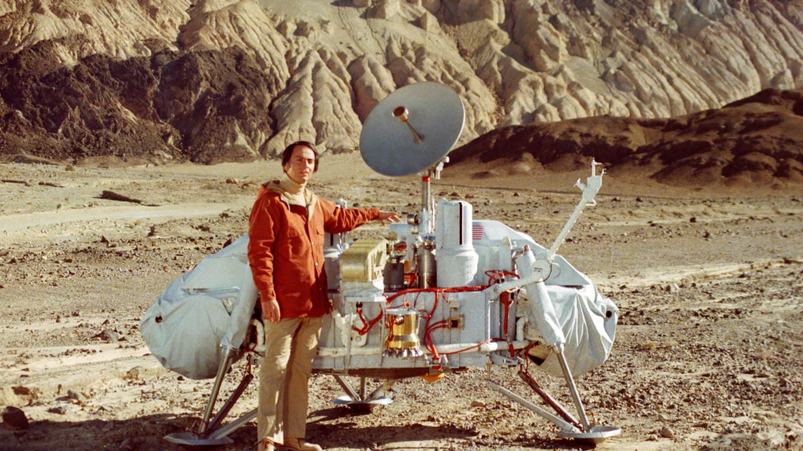

Welcome to Infinite Cosmos!
"Who are we? We find that we live on an insignificant planet of a humdrum star lost in a galaxy tucked away in some forgotten corner of a universe in which there are far more galaxies than people." - Carl Sagan
Infinite Cosmos is a living, virtual memorial to the life and work of Dr. Carl Sagan. A collaboration amongst fans, this site intends to be a place where fans of Sagan can share memories, artwork and other thoughts inspired by the great scientist and communicator.
Please visit the Gallery for the latest submissions! Visit the Register page and sign up for free to be a part of the crew and submit to this site. All submissions that follow the rules and guidelines are welcome. Long Live Sagan!

Latest News
Sagan on Rose
Carl Sagan was a repeat guest on the Charlie Rose show. Together these two great communicators casually discussed Sagan’s life, work, and the status of science in America.
NYC Book Club to Feature Sagan Family Book
On December 10, the Secular Humanist Society of New York book club will discuss Acquiring Genomes by Lynn Margulis and Dorion Sagan; details here...
Carl Sagan, gone for "ten trips around the Sun"
Tom Moore emailed us with the link to his blog-a-thon post. Here it is in full: Carl Sagan was one of the strongest and most enduring influences...
Gallery

Before the Viking launches in the mid-1970s, our knowledge of Mars was extremely limited. The team of scientists assembled for the Viking project had to figure out how to land and navigate a spacecraft on a planet with almost no prior knowledge of what the surface would be like. Prior to the Viking missions, the Soviets had tried to land spacecrafts on Mars, and although one of their crafts seems to have made it to the surface, it lost contact with Earth before landing and may have crashed.
Tthe Viking project, however, was an amazing success. The Viking program, of which the lander was a part, gathered data and images about our nearest planetary neighbor that changed the way we see Mars. In fact, before Viking, scientists thought the Martian sky would be a deep blue, like our upper atmosphere, but early photos from Viking revealed Mars's salmon-colored sky for the first time.